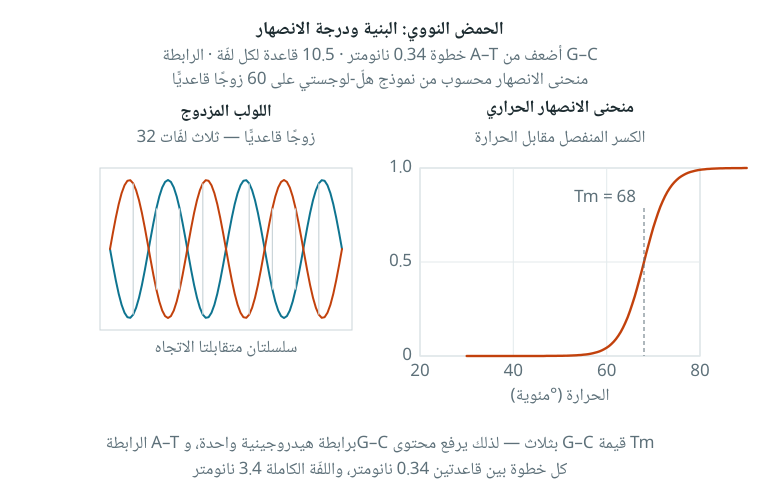

الحمض النووي الريبوزي منزوع الأكسجين
DNA
بوليمر حيوي من سلسلتين متقابلتي الاتجاه تلتفّان حلزونيًّا، تُخزَّن فيه معلومات الوراثة كتتابع قواعد. خطوة الصعود 0.34 نانومتر ولفّة كاملة بعشر قواعد ونصف، وحرارة انصهار الازدواج ترتفع بنسبة الغوانين والسيتوزين.
الحمض النووي سجل ووسيلة نسخ في مادة واحدة. العمود الفقري سكر ريبوز منزوع الأكسجين وفوسفات يحمل الشحنة السالبة، وعلى السكر تُثبَّت واحدة من أربع قواعد: أدينين، ثايمين، غوانين، سيتوزين. الاقتران محكوم بالشكل: الأدينين يقترن بالثايمين برابطتي هيدروجين، والغوانين بالسيتوزين بثلاث، فكل سلسلة قالب للأخرى.
والاتجاهية أساس النسخ: السلسلة الأولى تسير 5′→3′ والثانية 3′→5′، فلا يُبنى الحمض الجديد إلا باتجاه واحد في كل قطعة، ومن هنا تأتي القطعة المتأخرة في تضاعف الحمض النووي. والمعلومة ليست في الحروف وحدها بل في التتابع والمسافات والالتفاف حول البروتينات، فالجين جزء وظيفي لا مجرّد مقطع.
الآلية
كيف يحدث الأمر على مستوى الجسيمات أو المتغيّرات المباشرة
ثبات الحلزون المزدوج يأتي من تراكم قوى ضعيفة لا من رابطة واحدة: رابطتا أو ثلاث هيدروجينية بين كل زوج، وتكدّس قواعد مسطّحة فوق بعضها (تداخل باي) يُسهم بالجزء الأكبر من الثبات، وتعادل الشحنات السالبة للفوسفات بأيونات وكبروتينات. لأن الروابط ضعيفة، يمكن فكه عند الحاجة بلا كسر الروابط التساهمية للعمود الفقري، فيُفصل الحلزون عند النسخ ثم يُعاد. الحرارة تفعل الشيء نفسه: عند Tm يفقد نصف الازدواج بنيته، ولا تُكسر السلسلتان.
الأرقام والوحدات
العلاقات والوحدات والنطاقات العددية التي تسند الشرح
في الحلزون من النوع B خطوة الصعود 0.34 نانومتر لكل زوج قاعدي، ولفّة كاملة تحوي 10.5 زوجًا فتكون 3.57 نانومتر. فجين طوله 1,000 زوج قاعدي يمتدّ 340 نانومتر عند شده مستقيمًا. وحرارة الانصهار تُقدَّر لسلسلة في محلول مِلحي 0.1 مولار بالعلاقة Tm = 64.9 + 41·(GC% − 16.4) ⁄ 100 بالدرجات المئوية: رفع نسبة GC من 40% إلى 60% يرفع Tm من 74.6 إلى 82.8 درجة، أي ثماني درجات مقابل عشرين بالمئة من القواعد.
الفرق الدقيق
المفهوم الملتبس الذي يُخلَط به، وأين ينفصلان
الحمض النووي ليس البروتين: البروتين يقوم بالعمل، والحمض النووي يحفظ تصميمه، والرابطة بينهما تمرّ عبر الحمض الريبوزي (RNA) في معظم الكائنات. والجين ليس كل الحمض: أكثر من 90% من الحمض النووي البشري لا يُترجَم إلى بروتين، ويؤدي وظائف تنظيمية وهيكلية. والطفرة ليست بالضرورة مرضًا: أغلب الاستبدالات في المواقع الثالثة من الكودون لا تغيّر الحمض الأميني أصلًا. والتشابه في التتابع لا يعني تشابهًا في الوظيفة.
حدود التعريف
أين ينكسر التعريف أو النموذج وما الذي لا يفسّره
معادلة Tm أعلاه صالحة لسلاسل قصيرة في محلول مِلحي محدّد، وتتغيّر مع تركيز الأيونات والطول؛ في السلاسل الطويلة يصير للتركيب التتابعي دور أكبر من نسبة GC وحدها. وصورة الحلزون المزدوج المزدوج هي صورة في المحلول، أما في الخلية فالملفوف على بروتينات الهستون في مبنى الكروماتين الذي يغيّر إمكانية الوصول. ولا يفسّر التتابع وحده الشكل ثلاثي الأبعاد للجينوم ولا التعبير الجيني، فهناك تعديلات كيميائية على القواعد وعلى البروتينات المحيطة.

| الكمية | القيمة | المصدر |
|---|---|---|
| خطوة الصعود لكل زوج قاعدي في حلزون B | 0.34 نانومتر | [1] |
| عدد أزواج القواعد في لفّة كاملة | 10.5 زوج قاعدي | [1] |
| ارتفاع حرارة الانصهار مقابل زيادة GC | 8 درجة مئوية لكل 20% | [2] |
| عدد أزواج القواعد في الجينوم البشري | 3.1×10⁹ زوج قاعدي | [3] |
المصادر
- 1 DNA structure — base pairing and helical geometry — NCBI Bookshelf, National Center for Biotechnology Information. www.ncbi.nlm.nih.gov/books/NBK21134/ · اطُّلع عليه 2026-11-16
- 2 DNA melting temperature and GC content — Encyclopaedia Britannica. www.britannica.com/science/DNA · اطُّلع عليه 2026-11-16
- 3 The Human Genome Project — genome size and composition — National Human Genome Research Institute, NIH. www.genome.gov/human-genome-project · اطُّلع عليه 2026-11-16
استشهد بهذا المصطلح
الصيغتان مبنيتان من بيانات الصفحة نفسها: العنوان والتاريخ ورابط النسخة المنشورة.
الحمض النووي الريبوزي منزوع الأكسجين — DNA. (2026). ديوان المعرفة — انفراد. https://infiradev.com/diwan/terms/dna.html
@misc{dna2026,
title = {الحمض النووي الريبوزي منزوع الأكسجين},
titleaddon = {DNA},
howpublished = {{ديوان المعرفة — انفراد} — مرجع علمي عربي},
year = {2026},
url = {https://infiradev.com/diwan/terms/dna.html},
urldate = {2026-11-16},
note = {مراجعة علمية: تحرير انفراد الآلي — نُشر بأمر عبدالله الهويدي}
}
راجعه: تحرير انفراد الآلي — نُشر بأمر عبدالله الهويدي · 2026-11-16 · آخر تحديث 2026-11-16